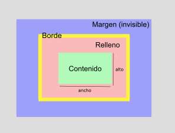

| Patrón | Aplicado a: | Ejemplo |
|---|---|---|
* |
Cualquier elemento | N/D |
e |
Elemento <e> |
<e> |
e f |
Cualquier <f> que esté incluido en
<e> |
<e>...<d>...<f/>...</d>...</e> |
e > f |
Cualquier <f> que es hijo de
<e> |
<e>...<f>...</f>...</e> |
e:first-child |
<e> cuando es el primer hijo de su elemento
padre |
<f><e></e>...</f> |
e + f |
<f> si está precedido inmediatamente por un
<e> |
...</e> <f>...<f> |
e[miAtr] |
<e> si posee el atributo
"miAtr" |
<e miAtr="xxx".../> |
e[miAtr="v"] |
<e> si posee el atributo "miAtr" y
este tiene el valor "v" |
<e miAtr="v".../> |
e[miAtr~="v"] |
<e> si su atributo "miAtr" es una
lista de valores separados por espacios y uno es "v" |
<e miAtr="x y z v".../> |
e[lang|="es"] |
<e> si su atributo "lang" es una
lista de valores separados por guiones y comienza con
"es" |
<e lang="es-ES" .../> |
e.miClase |
<e> cuya clase es "miClase" |
<e class="miClase".../> |
e#miId |
<e> cuyo identificador es miId |
<e id="miId".../> |
a:link |
Enlaces no visitados | N/D |
a:visited |
Enlaces visitados | N/D |
e:active |
<e> cuando es activado (tiempo entre que se
pulsa un botón sobre él y se suelta) |
N/D |
e:hover |
<e> cuando se posiciona el cursor sobre él pero
no se activa |
N/D |
e:focus |
<e> cuando tiene el foco posicionado en él |
N/D |
e:lang(c) |
<e> si está marcado con el lenguaje
c |
N/D |
e:fist-line |
Primera línea de <e> |
N/D |
e:fist-letter |
Primera letra de <e> |
N/D |
e:before |
Aplica contenido antes de <e> |
N/D |
e:after |
Aplica contenido después del elemento <e> |
N/D |
| Patrón | Descripción |
|---|---|
a b |
a seguido de b |
( a b ) |
a y b agrupados |
[ a | b ] |
a o b |
[ a || b ] |
a o b o ambos |
a? |
a es opcional |
a* |
0 o varios a |
a+ |
1 o varios a |
a {n, m} |
a como mínimo n veces y como máximo m |
| Nombre | Medio |
|---|---|
all |
Todos los dispositivos |
braille |
Dispositivos táctiles braille |
embossed |
Impresoras braille |
handheld |
Dispositivos de mano (pantallas pequeñas, ancho de banda reducido, etc.) |
print |
Para documentos paginados y mostrados en vista de impresión |
projection |
Dispositivos de proyección de presentaciones |
screen |
Pantallas a color de equipos informáticos |
speech |
Para sintetizadores de voz. Similar a "aural" |
tty |
Dispositivos de visualización con capacidades limitadas |
tv |
Televisores |
@import "hoja.css" tipo-medio;
/* Comentarios */
@media tipo-medio {
selector {
propiedad: valor-es;
}
}
| Unidad | Descripción |
|---|---|
px |
Píxeles (relativo al dispositivo) |
em |
Tamaño de la fuente actual |
ex |
Alto del caracter 'x' |
| Unidad | Descripción |
|---|---|
in |
Pulgadas (1pulgada = 2.54 cm) |
cm |
Centímetros |
mm |
Milímetros |
pt |
Puntos (1pt = 1/72pulgadas) |
pc |
Picas (1pica = 12 puntos) |
| Unidad | Descripción |
|---|---|
% |
Porcentaje |
0 |
No requiere unidad |
| Unidad | Descripción |
|---|---|
#RRGGBB |
Color RGB (6 Valores hexadecimales) |
#RGB |
Notación simplificada (#RGB = #RRGGBB) |
rgb(R,G,B) |
Color RGB (3 valores de 0 a 255) |
rgb(R%,G%,B%) |
Color RGB (3 valores porcentuales) |

| Propiedad | Descripción | Valores |
|---|---|---|
margin-topmargin-rightmargin-bottommargin-left |
Tamaño del margen superior, derecho, inferior e izquierdo | [ <longitud> | <porcentaje> | auto ] |
margin |
Ancho para varios márgenes individuales | [ <longitud> | <porcentaje> | auto ]{1,4} |
| Propiedad | Descripción | Valores |
|---|---|---|
padding-toppadding-rightpadding-bottompadding-left |
Ancho del relleno superior, derecho, inferior e izquierdo | [ <longitud> | <porcentaje> | auto ] |
padding |
Tamaños para varios rellenos individuales | [ <longitud> | <porcentaje> | auto ] {1,4} |
| Propiedad | Descripción | Valores |
|---|---|---|
border-top-widthborder-right-widthborder-bottom-widthborder-left-width |
Anchura del borde superior, derecho, inferior o izquierdo | [ thin |
medium | thick | <longitud> ] |
border-width |
Anchos de varios bordes individuales | [ thin | medium | thick |
<longitud> ] {1,4} |
border-top-colorborder-right-colorborder-bottom-colorborder-left-color |
Color del borde superior, derecho, inferior o izquierdo | [ <color> | transparent ] |
border-color |
Colores de varios bordes individuales | [ <color> |
transparent ] {1,4} |
border-top-styleborder-right-styleborder-bottom-styleborder-left-style |
Estilo del borde superior, derecho, inferior o izquierdo | [ none |
hidden | dotted | dashed |
solid | double | groove |
ridge | inset | outset ] |
border-style |
Estilos de varios bordes individuales | [ none | hidden |
dotted | dashed | solid |
double | groove | ridge |
inset | outset ] {1,4} |
border-topborder-rightborder-bottomborder-left |
Ancho, estilo y el color para el borde superior, derecho, inferior o izquierdo | [ <border-top-width> || <border-top-style> || <border-top-color> ] |
border |
Ancho, el estilo y el color para los 4 bordes | [ <border-top-width> || <border-top-style> || <border-top-color> ] |
| Propiedad | Descripción | Valores |
|---|---|---|
display |
Comportamiento del contenedor | [ inline |
block | list-item | run-in |
inline-block | table |
inline-table | table-row-group |
table-header-group | table-footer-group |
table-row | table-column-group |
table-column | table-cell |
table-caption | none ] |
position |
Esquema de posicionamiento | [ static |
relative | absolute | fixed
] |
toprightbottomleft |
Desplazamiento de la caja (respecto al límite superior, derecho, inferior o izquierdo del contenedor) | [ <longitud> | <porcentaje> |
auto ] |
float |
Posicionamiento flotante | [ left | right |
none ] |
clear |
Control de cajas adyacentes a los float |
[ none |
left | right | both ] |
z-index |
Solapamiento de niveles de capas | [ auto |
<entero_con_signo> ] |
direction |
Sentido direccional de la escritura | [ ltr |
rtl ] |
unicode-bidi |
Sentido direccional de la escritura | [ normal |
embed | bidi-override ] |
| Propiedad | Descripción | Valores |
|---|---|---|
width |
Ancho | [ <longitud> | <porcentaje> |
auto ] |
min-width |
Ancho mínimo | [ <longitud> | <porcentaje> ] |
max-width |
Ancho máximo | [ <longitud> | <porcentaje> |
none ] |
height |
Alto | [ <longitud> | <porcentaje> |
auto ] |
min-height |
Alto mínimo | [ <longitud> | <porcentaje> ] |
max-height |
Alto máximo | [ <longitud> | <porcentaje> |
none ] |
line-height |
Altura entre las bases del texto | [ normal |
<número> | <longitud>
| <porcentaje> ] |
vertical-align |
Alineación vertical del texto | [ baseline |
sub | super | top |
text-top | middle | bottom |
text-bottom | <porcentaje> | <longitud> ] |
| Propiedad | Descripción | Valores |
|---|---|---|
overflow |
Comportamiento del contenido si se desborda en la caja | [ visible |
hidden | scroll | auto ] |
clip |
Especifica la región visible del elemento | [ rect (<longitud> <longitud> <longitud> <longitud>) |
auto ] |
visibility |
Visibilidad de las cajas | [ visible | hidden |
collapse ] |
| Propiedad | Descripción | Valores |
|---|---|---|
content |
Agregador de contenido para :after y
:before |
[ normal |
none | [ <texto> | <uri> | <contador>
| attr(X) | open-quote |
close-quote | no-open-quote |
no-close-quote]+ ] |
quotes |
Especifica las marcas para indicar las citas | [ [ <texto> <texto> ]+ |
none ] |
counter-reset |
Inicializa un contador | [ [ <identificador> <entero>? ]+ |
none ] |
counter-increment |
Incrementa un contador | [ [ <identificador> <entero>? ]+ |
none ] |
list-style-type |
Estilo aplicable a los marcadores visuales de las listas | [ disc |
circle | square | decimal |
decimal-leading-zero | lower-roman |
upper-roman | lower-greek |
lower-latin | upper-latin |
armenian | georgian |
lower-alpha | upper-alpha |
none ] |
list-style-image |
Imagen aplicable a los elementos de las listas | [ url("http://...") |
none ] |
list-style-position |
Posición dentro de la lista de los elementos marcadores de las listas | [ inside |
outside ] |
list-style |
Permite establecer el estilo de la lista, la imagen y/o la posición | [ <list-style-type> || <list-style-position> || <list-style-image> ] |
| Propiedad | Descripción | Valores |
|---|---|---|
color |
Color del primer plano |
<color> |
background-color |
Color de fondo | [ <color> |
transparent ] |
background-image |
Imagen de fondo | [ url(...) |
none ] |
background-repeat |
Repetición de la imagen de fondo | [ repeat |
repeat-x | repeat-y |
no-repeat ] |
background-attachment |
Desplazamiento de la imagen de fondo | [ scroll |
fixed ] |
background-position |
Posición de la imagen de fondo | [ [ <porcentaje> |
<longitud> |
left | center | right ] [
<porcentaje> | <longitud> | top |
center | bottom]? ] | [ [ left
| center | right ] || [ top |
center | bottom ] ] |
background |
Propiedades individuales relacionadas con el fondo | [ <background-color> || <background-image> || <background-repeat> || <background-attachment> || <background-position> ] |
| Propiedad | Descripción | Valores |
|---|---|---|
page-break-before |
Gestionar saltos de página antes del elemento | [ auto |
always | avoid | left |
right ] |
page-break-after |
Gestionar saltos de página posterior al elemento | [ auto |
always | avoid | left |
right ] |
page-break-inside |
Evita los saltos de línea en el interior del elemento | [ avoid |
auto ] |
orphans |
Mínimo número de líneas de un párrafo que deben ser dejadas como mínimo al final de una página | <entero> |
widows |
Mínimo número de líneas de un párrafo que deben ser dejadas como mínimo al principio de una página | <entero> |
| Propiedad | Descripción | Valores |
|---|---|---|
font-family |
Familias de fuentes | [ [ <nombre-familia> | <familia-genérica> ] [, <nombre-familia> | <familia-genérica> ]* ] |
font-style |
Estilo de la fuente | [ normal |
italic | oblique ] |
font-variant |
Convierte las minúsculas a mayúsculas pero mantienen un tamaño inferior a las mayúsculas | [ normal |
small-caps ] |
font-weight |
Intensidad de la fuente | [ normal |
bold | bolder | lighter |
100 | 200 | 300 |
400 | 500 |
600 | 700 | 800 |
900 ] |
font-size |
Tamaño de la fuente | [ [ xx-small | x-small |
small | medium |
large | x-large | xx-large] |
[larger | smaller] | <longitud> | <porcentaje> ] |
font |
Atajo para establecer el resto de propiedades sobre las fuentes a la vez | [ [ [ <font-style>
|| <font-variant> || <font-weight> ]? <font-size> [ / <line-height> ]? <font-family> ] | caption |
icon | menu | message-box |
small-caption | status-bar ] |
| Propiedad | Descripción | Valores |
|---|---|---|
text-indent |
Desplazamiento de la primera línea del texto | [ <longitud> | <porcentaje> ] |
text-align |
Alineamiento del texto | [ left |
right | center | justify ] |
text-decoration |
Efectos de subrrallado, tachado, parpadeo | [ none |
[ underline || overline ||
line-through || blink ] ] |
letter-spacing |
Espacio entre caracteres | [ normal | <longitud> ] |
word-spacing |
Espacio entre palabras | [ normal | <longitud> ] |
text-transform |
Transformaciones del texto a mayúsculas/minúsculas | [ capitalize | uppercase
| lowercase | none ] |
white-space |
Comportamiento de los espacios dentro de los elementos | [ normal |
pre | nowrap | pre-wrap |
pre-line ] |
| Propiedad | Descripción | Valores |
|---|---|---|
caption-side |
Posición del título de respecto la tabla | [ top |
bottom ] |
table-layout |
Control del algoritmo usado para el formato de las celdas, filas y columnas | [ auto |
fixed ] |
border-collapse |
Selección del modelo de los bordes | [ collapse |
separate ] |
border-spacing |
Espaciado entre los bordes de celdas adyacentes | <longitud> <longitud>? |
empty-cells |
Visibilidad de los bordes de celdas sin contenido | [ show |
hide ] |
| Propiedad | Descripción | Valores |
|---|---|---|
cursor |
Especifica el cursor | [ [http://.../cursor.ico,]*
[ auto | crosshair |
default | pointer | move |
e-resize | ne-resize |
nw-resize | n-resize |
se-resize | sw-resize |
s-resize | w-resize | text |
wait | help | progress ] ] |
outline-width |
Ancho de la línea exterior | <border-width> |
outline-style |
Estilo de la línea exterior | <border-style> |
outline-color |
Color de la línea exterior | [ <color> |
invert ] |
outline |
Propiedades individuales de la línea exterior. | [ <outline-color> || <outline-style> || <outline-width> ] |
speak-header |
(Aural) Indica si las cabeceras de la tabla se leen antes de cada celda | [ once |
always ] |